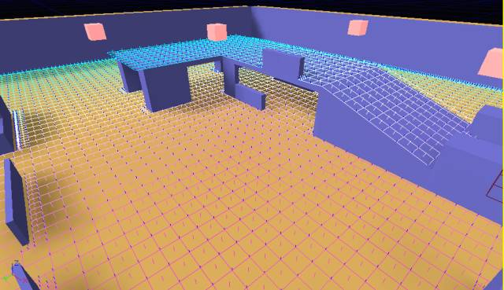
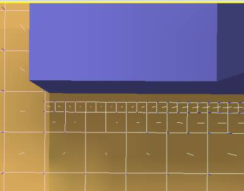

UDN
Search public documentation:
NavigationMeshReferenceCH
English Translation
日本語訳
한국어
Interested in the Unreal Engine?
Visit the Unreal Technology site.
Looking for jobs and company info?
Check out the Epic games site.
Questions about support via UDN?
Contact the UDN Staff
日本語訳
한국어
Interested in the Unreal Engine?
Visit the Unreal Technology site.
Looking for jobs and company info?
Check out the Epic games site.
Questions about support via UDN?
Contact the UDN Staff
导航网格物体参考指南
概述
 (FIG A)
注意，即使是具有10个节点的路径节点图寻路行为也不如只具有4个节点的导航网格物体路径好。
(FIG A)
注意，即使是具有10个节点的路径节点图寻路行为也不如只具有4个节点的导航网格物体路径好。
障碍物网格物体
生成过程
1. 探测
从设计人员放置的每个位置开始，地图中充满了网格物体。也就是，根据某个步长，通过光线投射来检查每段地图,一旦通过验证后，将它添加到网格物体上。在这个阶段的结束时，我们会获得一个类似于网格的高密度的网格物体。由于Unreal的线性检测的AABB特性，我们这里使用正方形进行工作。 (图片C描画了执行网格物体生成第一个阶段后的状态。)
这种方法的一个缺点是那些稍微有点和用于探测的步长不协调的物体，最终将会和那个网格物体的边界很远。要想避免这个问题，当在检测过程中和障碍物发生碰撞时，步长将会被细分为当前的N倍来获得期望的精确级别。 (图片D显示了经过细分改善后的测试地图的一部分。）
2. 网格物体简化
最容易出问题的地方(并且是耗费时间最长的地方)是把网格物体简化为可以更加合理地适应内存并运行寻路的程度。 目前，我们的简化工作主要是通过融合平板的方法来完成，然后对所说的平板进行凸面分解，分解为最小数量的凸面形状。 这个过程有一些步骤构成:- 进行正方形融合来降低多边形的数量，加速下面步骤的进行。
- 把所有多边形融合到仅由斜面中变化之处分割的下凹平板中。
- 将凸起平板分解为凸面形状。
正方形融合
正方形融合简单地获得一个起始节点，并在所有的方向上进行扩展，尝试找到那个起始正方形的最佳配置(最大区域)。这个过程很快，并大大地降低节点的数量，从而加速了其他过程。 这里是正方形融合过程完成后的测试地图的屏幕截图： 请参照 UNavigationMeshBase::MergeSquares() 。
请参照 UNavigationMeshBase::MergeSquares() 。
凹下平板的融合
这个步骤将尽可能地融合邻接多边形(无论结果是否是凸面)。对于平板上非常不相似的多边形，或者那些融合该多边形会导致平板偏移原始多边形太远的多边形，将不会对其进行融合。 这里是当执行完这步后网格物体的外观： 注意： 这步包含了边缘简化，它使得由原始扩展过程的网格本性所导致的楼梯形状变得平滑。为了解释这一现象，这是没有打开边缘简化的
网格物体的屏幕截图：
注意： 这步包含了边缘简化，它使得由原始扩展过程的网格本性所导致的楼梯形状变得平滑。为了解释这一现象，这是没有打开边缘简化的
网格物体的屏幕截图：
 请参照UNavigationMeshBase::MergePolysConcave() 。
请参照UNavigationMeshBase::MergePolysConcave() 。
平板分解
一旦网格物体被简化为了具有类似坡度和高度的平板，那么我们需要把它们分解为有用的形状。这通过凸面分解过程来完成，它使用 A* 方法来查找代表凹下平板的形状的最佳配置。 请参照 UNavigationMeshBase::DecomposePolyToConvexPrimitives() 。3. 网格物体的最终形式
既然已经简化了网格物体，最后的一步是构建节点间可以组成路径的边并生成障碍物网格物体。同时在这个步骤中，我们将会剔除没有使用的顶点并处理数据来进行序列化。 (图片I 展示了所有步骤都完成后的网格物体，注意垂直的面描画了障碍物网格物体。)
导航网格物体相对于路径节点的好处
降低节点密度
因为使用一个网格物体，我们可以一个单独多边形代表一大片区域，所以整体的图形密度将会降低。这确实是一个优势，以下是原因：- 内存占用量随着所存储的节点降低而降低。
- 由于要搜索的图形密度降低，Pathfinding(寻路)时间将会降低。
- 较少的节点意味着在修复整个关卡的路径信息时需要较少的时间。

更多的可选数据结构
目前路径数据通过关卡中的UReachSpecs 和ANavigationPoints来存储。这将会由于父项类的性能消耗(实际上是AActor)和数据的分布式特性导致较大的内存占用量。通过使用网格物体，我们的数据存储在一个大的缓冲中，它使其本身更容易地进行压缩和其它优化。我们没有费很大的努力来优化我们的数据，但是我们看到了比MP_Gridlock的路径节点获得了20%的性能提升。去除FindAnchor
目前，无论何时当我们开始路径检索时，AI首先需要决定它要从哪个节点开始进行寻路。这可以通过一个8叉树检测来返回在范围内的路径节点，然后从AI向那个路径节点进行光线投射来查找最近的可以到达的路径节点来完成。如果目的地还没有在图表上，那么同样也会针对路径目的地实施这个过程。尽管这些操作有些可以通过缓存等来缓解，但是事实上仍然需要寻路AIs在运行时周期性地执行大量的光线投射。使用网格物体，FindAnchor处理的模糊性不再存在。我们简单地找到AI当前所处的多边形，将其作为起始位置。同样对我们的目的地也是一样的。较好的寻路行为
在先前的图片A中展示的地图中，路径节点的运动的某些地方会有一些不能获得正常的外观的情形。到AI最近的路径节点或者在他的后面，或者在他要前进的方向的反方向上。同样的问题也存在于目标节点中。不用再进行光线投射
使用我们生成到网格物体中的数据，AI所进行的光线投射的大部分工作都可以被消除。一个例子是，当一个AI第一次尝试移动时，为了决定AI是可以直接地到达他的目的地并避免在网络上的寻路，需要执行一次初始的光线投射。由于以下两个原因导致不再需要这个步骤。第一，在大多数情况下，如果一个点可以直接地到达，它一般和AI在同一个多边形中，所以找到那个多边形的起始点或目标点及检测它们是否一样是很容易的事情。第二，我们可以求助于障碍物网格物体来进行低保真度的线性检测来决定直接可到达性。这两个选项都要比光线投射的性能消耗低的多。在战争机器的基础代码中有很多其它的实例，在那里AI询问他是否可以直接到达一个点以及那些不需要进行光线投射的所有点。 另一个可能的优化方法是使AI移动到网格物体本身上(而不是通过PHYS_Walking运行)。网格物体是AI可以行走的配置空间的清楚展现，所以和每个帧PHYS_Walking执行N次光线投射相比，向网格物体进行投射并执行一次单独的光线投射来矫正可见几何体上的AI是微不足道的。这对于群体来说是非常有用的。因为它们或许不需要像普通的AI那样需要高保真度，我们可以潜在地通过把很多个群体actors对齐到导航网格物体上，而不是相对于世界几何体来执行碰撞检测。事实上，我们应该可以增加屏幕上AI的数量。更好地展现世界
可行走空间的连续展现对于AI可能执行的很多其它类型的空间查找是有好处的。以下是一些例子：- 决定一个位置是否仍然在一个组的构成中已经得到了很大的改善，因为您可以真正地查看期望的组成为止是否在网格物体内，并已经决定是否可不可以行走。前面的方法依靠查找到构成位置最近的路径节点，进行这样的查找性能消耗是很大的。此外，到那个位置的路径节点如果不是非常地靠近构成位置，通常效果看上去会很糟糕。
- AI可以在沿着墙壁上的任何点上翻过墙壁，而不需要到达一个代表‘可以翻过墙壁’的位置的独立的路径节点。
- 简单的网格物体调整便可以作为精确的影响地图。手动创作的路径节点图只能在边缘上是精确的，因为它不能完全地覆盖整个世界空间，并且依赖于人手动地放置的节点，而我们的网格物体是精确的完全的。
自动生成
因为生成过程是自动的，从而减轻了那些创建(及维护)具有路径的关卡的设计人员的工作量。首先，最明显的好处是设计人员不必再放置节点，同时出现错误路径的可能性也降低了(比如，某些人改变了几何体但是没有改变路径网络)，因为自动生成的过程通常是很少出错的。比如，在战争机器开发过程中有一些实例，一个完全脚本化的关卡传递过来要进行视觉效果处理，它将会总是断开关卡上大部分路径数据。自动构建路径的功能是解决这种情形的一个简单方法。不同尺寸的代理的固有灵活性
精确地展现世界的另一个好处是不再需要对变化宽度的实体进行特殊考虑。我们不必手动地为正在使用中的每种可以走动的生物添加宽度类，我们可以利用网格物体提供的额外数据。已经计算了多边形间的边缘宽度，并且我们也可以对低保真度的障碍物网格物体进行‘粗细’线性检测来获得关于在运行时的较宽实体的可到达性信息。动态物体的”真正”处理能力
当限制于路径节点图处理妨碍道路的动态物体是很困难的，并且有时候是不可能的。比如，如果您向一个reachspec(到达说明)抛出一个柳条箱时，数据不能知道如何绕过障碍物。很明显，您可以进行光线投射以及尝试添加一个动态锚点把障碍物往旁边放一下，但是这a)需要光线投射，b)在很多情况下是不工作的。使用导航网格物体，所有的那些问题都可以避免，障碍物可以在网格物体的内部进行处理，并且不需要光线投射。您可以简单地获取障碍物的边界框并分裂边界周围内部的多边形。现在您便有一个完全地路径化的网格物体，它描绘了如何避开那个障碍物，而不需要进行任何现象检测。新分割的多边形将会作为那个多边形的子层次。当AI进入它时，我们将会在受影响的多边形的内部构建一个网格物体，然后他可以从子网格物体上进行寻路从而导航绕开障碍物，而不是调整整个网格物体。请参照图片J，它是示范了关于这个应用的例子：